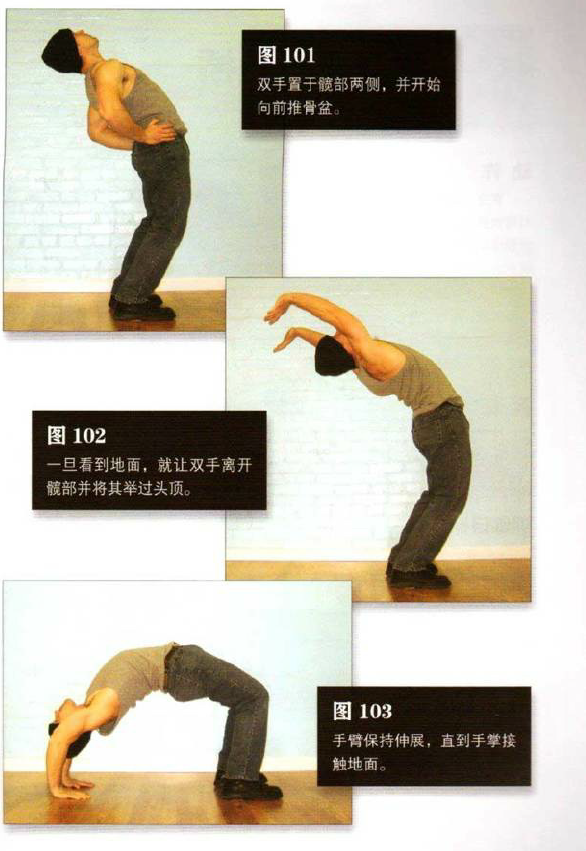

直立，双脚与肩同宽，身体后方的空地要足以让训练者平躺
双手置于镜部两侧，并开始向前推骨盆（图101）。当骨盆移至你的极限时，开始弯曲膝盖，同时脊柱向后弯曲成弓形。然后头部向后仰，眼睛向后看。整个过程要流畅、一气呵成。继续弯曲脊柱，直到你可以看到身后几厘米的地面。一旦看到地面，就让双手离开髋部并将其举过头顶（图 102）。这种姿势要求你有很好的柔韧性，前移的髋部加上弯曲的盖能够防止你向后摔倒。继续向后、向下运动，手臂保持伸展，直到手掌接触地面。这是该动作的结束姿势（图103），标准的桥式。接着，弯曲手臂与双腿，直到背部着地。然后站起来，回到起始姿势，重复动作。在整个练习组中，保持正常呼吸。
初级标准：1 组，1 次
中级标准：2 组，各 3 次
高级标准：2 组，各 6 次